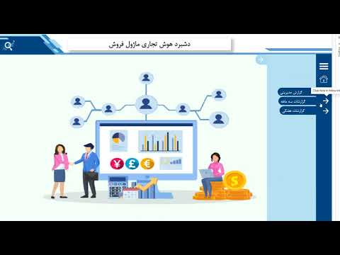
Video demo01
Comprehensive KPI Dashboard
Covers profit, sales, and financials across all departments — each section built around the KPIs that actually matter to that team.
Business Intelligence · Data Automation
I build Power BI dashboards, reliable data workflows, and financial reporting systems that teams can actually use.
BI Developer
BI Developer with 4+ years of experience in Power BI, SQL Server, and Python. I’ve built dashboards and automated workflows across petrochemical, finance, and sales environments.
Most of my work has focused on helping teams use their data — from executive KPI dashboards to automated financial reports. I also have hands-on ERP experience and worked directly on BI projects for Amir Kabir Petrochemical.
Dashboards and automation across sales, finance, logistics, and operations.

Video demoCovers profit, sales, and financials across all departments — each section built around the KPIs that actually matter to that team.
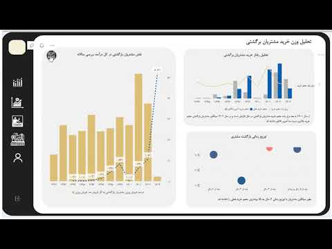
Video demoMeasures whether win-back strategies are working and compares revenue from new and returning customers against acquisition cost.
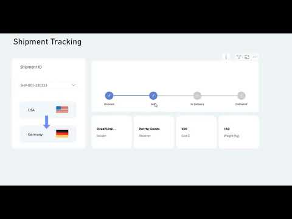
Video demoTracks shipment status by origin and destination country, giving a clear picture of where everything is and what is moving.
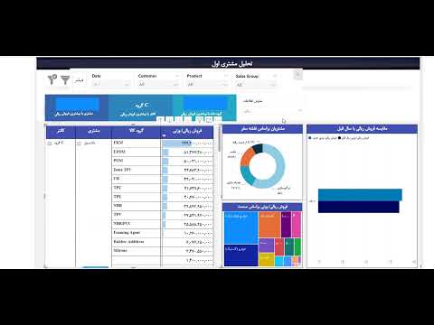
Video demoBreaks down sales by amount and volume per customer, with supplier performance shown alongside.
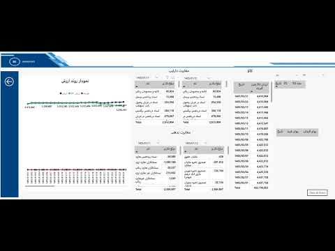
Video demoTracks daily profit trends, compares accounting documents, and calculates cost of goods daily by product.
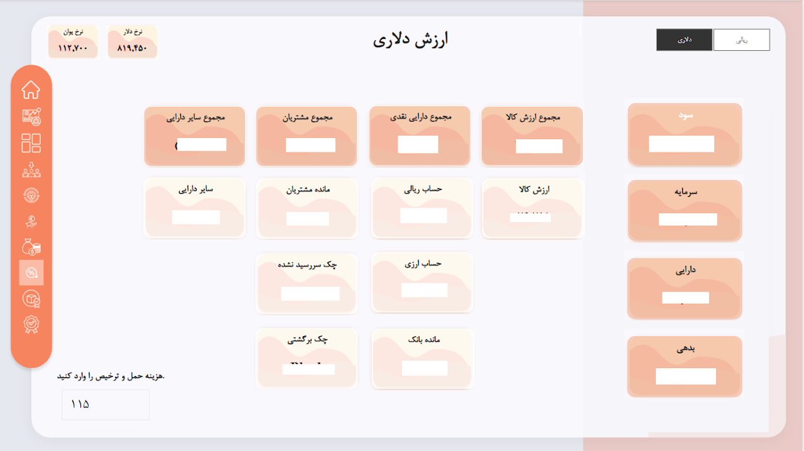
DashboardCalculates profit and loss in USD from accounting documents, pulls live exchange rates, and adds shipping costs on the fly.
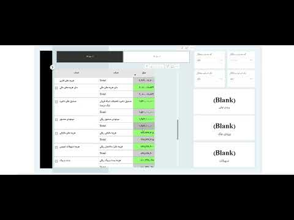
Video demoShows the flow of every account — where money comes from and where it goes.
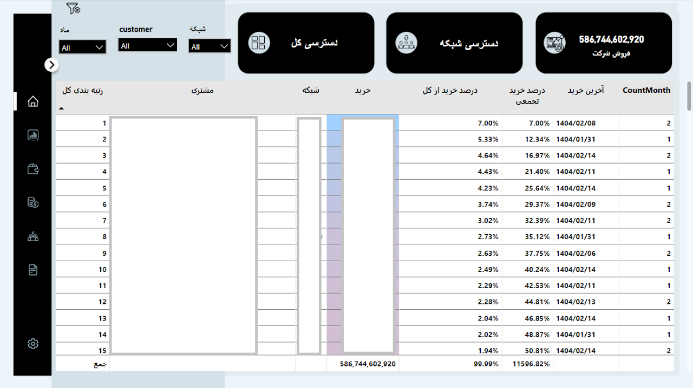
DashboardRanks top customers by sales volume and shows their payment status alongside.
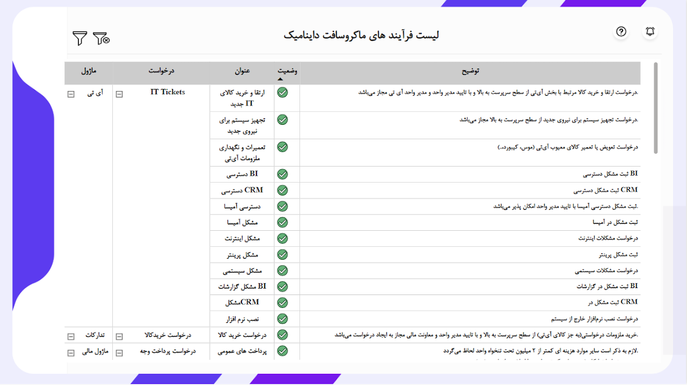
DashboardAn overview of Microsoft Dynamics processes — what each one does and whether it has been implemented.
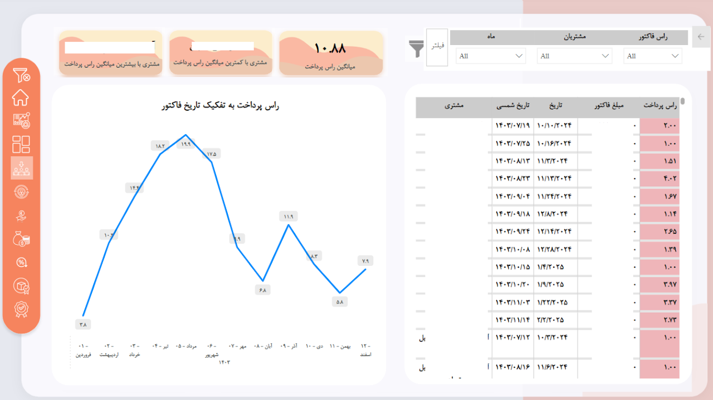
DashboardCalculates each invoice due date per customer based on agreed payment terms.
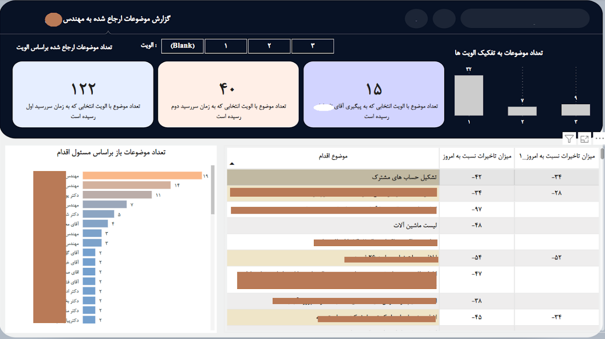
DashboardTracks letters sent to the client — what is sent, what is pending, and where each one stands.
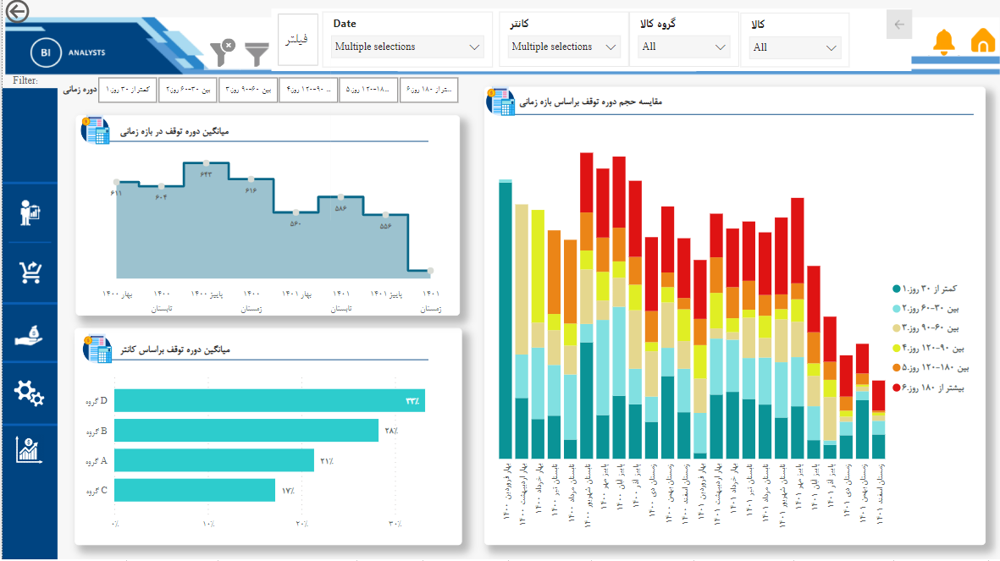
DashboardShows how long products sit in the warehouse without moving, making slow or stuck inventory easy to spot.
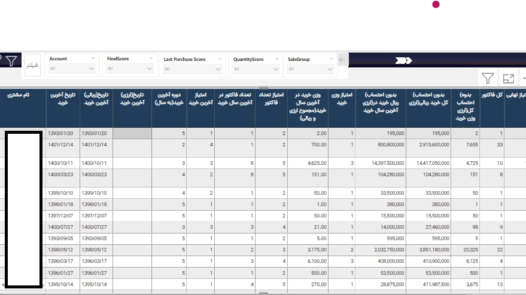
DashboardTracks purchasing behavior and scores customers against defined criteria to identify the most loyal customers.
Professional references
Formal recommendation letters from teams I have worked with, alongside verified client ratings from projects delivered through Karlancer.
Continuous learning
Specialized coursework in Python, data science, supply chain management, and agile delivery.
Have a data challenge?